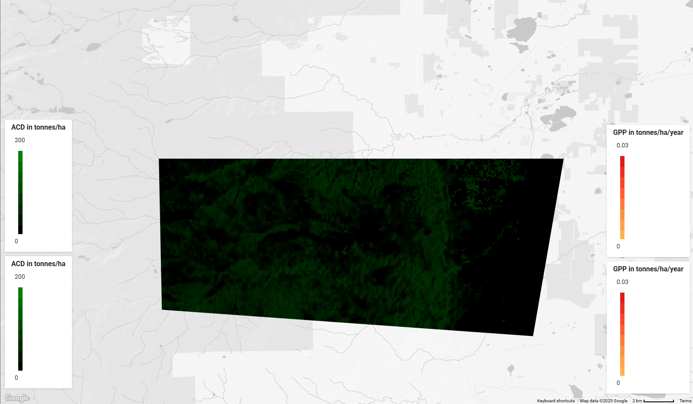
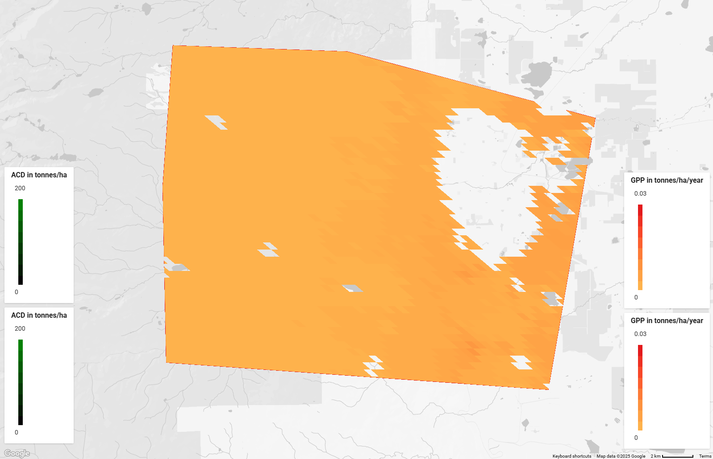

Carbon Sequestration
This assignment covered the aboveground carbon density (ACD) and gross primary production (GPP) of carbon in Boulder Colorado, USA (40.0° N, 105.3° W). This refers to the production and storage of carbon from plants in the region. It is important to note that Boulder has a relatively dry climate, with only around 21 inches (53 cm) of precipitation per year, which affects the type and productivity of local vegetation. The total region studied spans 54157.356 hectares.
Aboveground carbon density map. Mean ACD: 18.3013 tC/ha
Gross primary productivity map. Mean GPP: 0.17482 tC/ha/y